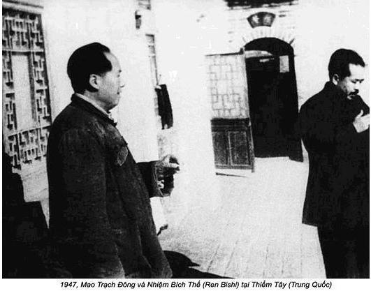

Chương 3

ắc Kinh hoang tàn và tiêu điều. Sau tám năm Nhật chiếm đóng, bốn năm nội chiến, phố xá trở nên ngổn ngang, bẩn thỉu, những bức tường dày bao quanh Thành Nội bị lở từng mảng, có chỗ đã bắt đầu sập. Các biển quảng cáo vui mắt, sặc sỡ cũng biến mất khỏi các cửa hiệu và quầy hàng, những quán sách thân thương của tôi ở Lưu Linh Chương đóng cửa im ỉm dường như lâu lắm rồi.
Dân tình xem ra nghèo đói, nhếch nhác chẳng khác gì bộ mặt thành phố. Đàn ông, đàn bà chỉ mặc những chiếc bộ quần áo cũ kỹ màu ghi đá hoặc xanh xám đã bạc phếch. Mỗi người đều có một đôi giày bằng vải buồm thô màu đen, tóc cắt ai cũng giống ai. Đàn ông tóc húi cua, đàn bà búi tó sau lưng. Tôi mặc com-lê Tây phương, cà vạt, giày da bóng lộn, tóc chải mượt giống y như người nước ngoài. Lý Liên váy áo sặc sỡ, giầy cao gót, tóc thời trang uốn thành nếp tuyệt đẹp, nàng nổi bật trông giống bông hoa anh túc đỏ rực trên cánh đồng lúa mì vàng óng. Tôi phải mượn ngay bộ đồng phục mà mấy ông cộng sản đã khuyên. Lý Liên đến ngay cửa hàng may đo đặt may một bộ áo quần giống mọi người.
Mẹ tôi thay đổi quá. Bà già đi nhiều, trông khắc khổ, gầy nhom, nặng chưa tới 40 ki-lô, tóc bạc, nhưng rất sung sướng khi thấy chúng tôi quay về, cầu mong chúng tôi đừng bỏ nhà đi nữa. Tôi hứa ở lại với bà.
Dù nghèo, nhưng khí thế của dân Bắc Kinh sôi nổi. Khắp chốn, khắp nơi những khuôn mặt tràn trề hạnh phúc. Bắc Kinh được tự do, dân chúng chân thành chào mừng chính phủ cộng sản mới. Trong thành phố bao trùm bầu không khí thân thiện tin tưởng vào hạnh phúc. Chỉ một số ít bạn bè, họ hàng cho rằng việc tôi trở về là dại dột, không thể chấp nhận được.
Anh tôi thu xếp cho tôi gặp Phó Liêm Chương để thảo luận vấn đề công việc của tôi. Tôi đến nhà Phó. Ông sống trong toà nhà của Bộ y tế phân cho. Toà nhà nằm ở đường Quảng Xương phía bắc trung tâm thương mại Vương Phủ Tỉnh Toà nhà này từng là nơi ở của hoàng tử Mãn Châu, sau đó một tướng Quốc dân đảng chiếm cho đến khi cộng sản tịch thu. Biệt thự này có kiểu cách làm tôi nghĩ tới ngôi nhà của chúng tôi, nhưng nó rộng, sang trọng, lộng lẫy hơn nhiều. Phía sau biệt thự có 6 vườn nhỏ, với 7 hay 8 gốc nho đang leo giàn, hòn non bộ nước chảy róc rách theo phong cách Trung Hoa truyền thống, lối đi lát gạch tráng men.
Khi tôi đến, Phó Liêm Chương nửa ngồi nửa nằm trên trường kỷ làm bằng trúc bện song. Ông dáng người cao, hơi gầy, vẻ ốm yếu mệt mỏi, vầng trán cao vuông vắn, đôi mắt tinh ranh. Ông chừng 55, hơn tôi tới 26 tuổi, trông có vẻ già trước tuổi.
Khi tôi đến, Phó Liêm Chương cũng chẳng đứng dậy, chỉ chìa tay cho tôi bắt. Bàn tay mềm mại của một trí thức. Tôi thấy vinh dự khi được viếng thăm một quan chức cao cấp như ông.
- Tôi đã bị ho lao mấy năm nay, vì thế tôi không thể nói chuyện lâu với đồng chí được – ông ta giải thích, sau khi hoan nghênh tôi đã hồi hương rồi hỏi tỷ mỉ về học hành, kinh nghệm làm việc. Vừa nghĩ ngợi, ông nói tiếp:
- Vấn đề công việc của đồng chí đã được giải quyết. Sáng mai đồng chí có mặt ở Cục Bảo vệ sức khoẻ.
Chính phủ mới vẫn hoàn toàn chưa thành hình, chức năng quyền lực điều hành tạm thời trao cho Uỷ ban quân quản thuộc đảng cộng sản Trung Quốc. Cục Bảo vệ sức khoẻ trực thuộc Uỷ ban này.
Tại Cục Bảo vệ sức khoẻ tôi được tiếp đón nồng nhiệt. Một cán bộ nói với tôi, ở đây còn thiếu bác sĩ điều trị và kể, anh tôi từng là sếp của anh ta.
Một cán bộ trong phòng nói:
- Thứ trưởng Phó Liêm Chương bảo đồng chí sẽ trở thành các bộ của Cục chúng tôi – anh ta giải thích – Chúng tôi ở đây hưởng chế độ bao cấp miễn phí. Lãnh đạo đảm bảo cho đồng chí mọi thứ cần thiết: nhà cửa, chỗ làm việc, quần áo, thậm chí cả giày dép nữa. Vì đồng chí sẽ đảm đương công việc bác sĩ trưởng điều trị, đồng chí sẽ nhận bậc lương hạng hai, khẩu phần cao hơn chút ít so với anh em.
Hệ thống “bao cấp miễn phí” nghĩa là tôi sẽ chẳng có lương. Đảng cộng sản thi hành hai dạng trả công cho viên chức nhà nước. Ai tham gia cách mạng chưa lâu, bắt đầu làm cho đảng nhận lương bình thường, ai tham gia cách mạng lâu năm được cung cấp toàn phần. Những người tham gia tình nguyện nhận kiểu riêng. Tôi thuộc hạng “tình nguyện theo cách mạng”. Dù tôi là người mới vào nhưng vẫn được vinh dự thuộc hạng được nhà nước cho hưởng chế độ cung cấp toàn phần.
Nhưng tôi vẫn băn khoăn, chẳng vui chút nào. Giờ đây gia đình tôi đông người, phải nuôi mẹ, hai bà cô, bố mẹ vợ và cả Lý Liên nữa. Thật ra tôi cũng đã để dành được ít vàng và Mỹ kim, nhưng nếu không có lương, số tiền dành dụm đó chẳng mấy chốc mà bay.
Chỉ khi gặp đồng chí Lại tôi nhận được một số hướng dẫn về nhiệm vụ sắp tới của mình.
- Đồng chí Lại sẽ dẫn đồng chí tới chỗ làm việc Khu Điều trị bệnh nhân ngoại trú tại Đại học Công Nhân ở Đồi Hương – người ta nói cho tôi biết – bây giờ đồng chí cứ về nhà, thu xếp tất cả đồ dùng cần thiết. Báo cáo lại cho tôi sau một tuần lễ tính từ hôm nay. Xe tải sẽ chở đồng chí đến chỗ làm. Đồng chí Lại sẽ đi cùng đồng chí.
Thời gian gặp chẳng nói rõ, thậm chí chẳng ai hỏi xem tôi có muốn làm ở chỗ mà họ phân công ra hay không. Tôi đâm ra lúng túng, bởi vì tôi chưa bao giờ nghe đến tên trường Đại học Công Nhân này mặc dù tôi vui vì được làm việc ở trường Đại học. Nhưng dù sao tôi cũng rất muốn công việc ở trường Đại học phải có liên quan tới bệnh viện tôi mơ ước. Giờ đây tôi được giới thiệu làm việc phòng điều trị bệnh nhân ngoại trú, chẳng như lời đã hứa.
Hơn nữa, tôi biết Cục Bảo vệ sức khoẻ cũng chẳng kiếm được việc cho Lý Liên. Người ta chỉ xếp vợ tôi làm việc tạm thời ở trường mẫu giáo cách Bắc Kinh 20 ki lô mét, nơi có viện đào tạo nhân viên y tế cộng đồng ở quận Tống. Khả năng, trình độ của Lý Liên người ta chẳng quan tâm. Thật bực mình, chả lẽ họ so sánh công việc được giao ngang với công việc của vợ tôi đã từng làm ở lãnh sự Anh bên Hong Kong? Chuyện hồi hương xem ra không thuận lợi chút nào, tôi cay đắng nghĩ rằng tại sao mình lại không tặng chiếc đồng hồ Rolex cho Nghiêm.
- Chú về chưa lâu nên chưa thể hiểu tất cả cái gì đang xảy ra ở đất nước – anh tôi an ủi – Ở đây không phải người chọn việc mà việc chọn người. Điều này nghĩa là “chấp hành sự phân công của tổ chức”. Về lương, chú tạm thời sử dụng tiền tiết kiệm. Dần dà mọi thứ sẽ đâu vào đấy. Điều luật đảng không cho phép anh nói thêm.
Cơ quan được gọi là Đại học Công Nhân đặt ở Xương Sơn hay còn có tên Đồi Hương, phía tây bắc thành phố Bắc Kinh, cách cung điện cổ Mùa Hạ vài dặm, một khu đồi đi săn của hoàng đế Càn Long khi đương quyền đã xây dựng. Ở đây có hai chùa phật nổi tiếng – Phật Nằm và Thanh Thiên Vân tự. Mùa thu, hàng cây thông chuyển sang màu bạc, các cây khác lá chuyển màu đỏ thẫm mọc bên đồi tạo ra bức tranh thiên nhiên tuyệt đẹp. Đại học Công Nhân chiếm một khu rộng lớn ở Đồi Hương, nơi đây rất nhộn nhịp và nổi tiếng.
Khu này thật kỳ lạ, chỗ nào cũng có lính canh gác. Hai quan chức cao cấp, cán bộ lão thành cách mạng của đảng – Vũ Trần Phổ và La Đạo Nhương, giám đốc và phó giám đốc Cục Bảo vệ dưới quyền trực tiếp Tổng Hành dinh của Uỷ Ban Trung ương Đảng cộng sản, đưa tôi thăm trường. Tại đây, hầu hết là cán bộ cao cấp của đảng. Vũ Trần Phổ phát cho tôi tất cả các thứ cần thiết, trao cho huy hiệu của trường, nhắc nhở phải giữ gìn nó như con ngươi của mình. Ông dặn tôi:
- Đừng kể cho ai những gì xảy ra ở đây, công việc của anh thuộc bí mật.
Lúc đó tôi chẳng hiểu vì lẽ gì.
Khu tập thể tôi ở nằm dọc hàng cây thoai thoải phía đồi, trong dẫy nhà gỗ xem ra không tương xứng với cung vua lộng lẫy trên đồi. Đó là một căn phòng tồi tàn, nền đất, mái dột nát, không thể nào tưởng tượng nổi, bởi tôi sinh ra trong một gia đình giàu có. Duy nhất trong phòng có một bóng đèn điện toả ánh sáng đỏ quạch. Giường nằm là hai miếng ván kê trên hai cái niễng, không thành giường, đệm nằm cũng không. Nước, tất nhiên cũng không nốt, phía sau là nhà vệ sinh công cộng. Tôi phải dùng chăn bông mỏng xếp lại thành đệm để nằm. Sau đó người ta lắp bình nước, khí đốt, bồn rửa mặt. Với chức vụ bác sĩ tôi không phải ở chung với người khác. Điều kiện ăn ở tồi tệ đến mức tôi không thể đưa Lý Liên đến ở cùng, chúng tôi chỉ gặp nhau cuối tuần ở nhà mẹ, nơi tôi thường về để nghỉ và tắm giặt.
Bữa ăn cũng lại thể hiện đẳng cấp, chức vụ của tôi. Ngày hai bữa theo phong tục gia đình nông dân Trung Hoa: mười giờ sáng và bốn giờ chiều. Nhưng khác với nông dân bữa ăn hiếm khi có thịt, chúng tôi theo khẩu phần hạng hai, thịt được cung cấp hàng ngày. Nhà ăn tập thể cũng chẳng gì hơn khu tôi, nhưng món ăn được nấu khéo léo, thậm chí lại còn ngon, nhà bếp sạch đến ngạc nhiên.
Chỗ làm việc trong bệnh viện còn làm tôi kinh ngạc hơn. Đó cũng lại là cái lều nông thôn, nền đất chẳng có một tí thiết bị y tế nào cả, trừ vài cái nhiệt kế, vài bộ đo huyết áp. Trong số thuốc thang, tôi chỉ thấy aspirin, thuốc ho nước, vài loại kháng sinh. Khi khám bệnh tôi chỉ có mỗi chiếc ống nghe với kinh nghiệm tay nghề của mình để chẩn đoán, điều trị. Hy vọng chẳng có bệnh nhân nặng nào chui vào đây.
Dù vậy, nhân viên trong bệnh viện rất lạc quan, tinh thần rất cao. Trong biên chế có gần 30 người, họ chờ đợi sự xuất hiện của tôi từ lâu. Gặp tôi họ mừng ra mặt. Tất cả đều rất trẻ, phần lớn trẻ hơn tôi mặc dù tôi mới 29. Ngay cả hai người phụ trách cũng không quá 25 tuổi. Đám nhân viên được đảng lựa chọn từ nông thôn vùng ngoại ô, mới học hết tiểu học. Vì thế họ chỉ làm được công việc sơ cứu – băng vết thương nhỏ, cho uống aspirin khi sốt, không có một chút kiến thức cơ bản về bệnh tật, làm sao có thể chẩn đoán bệnh được. Họ bảo tôi:
- Chúng tôi tin rằng đồng chí sẽ dậy chúng tôi kiến thức y học hiện đại. Chúng tôi hoàn toàn chưa hiểu biết gì cả.
Họ rất muốn tôi giảng bài cho họ. Tôi thất kinh, làm sao tôi có thể giảng dạy với trình độ học vấn của họ chỉ có như vậy.
Một người bạn cũ đã 11 năm xa cách, anh đến thăm trong ngày nghỉ cuối tuần đầu tiên ở nhà mẹ tôi. Chúng tôi ôn lại kỷ niệm đã qua, trao đổi với nhau về tình hình đất nước. Anh bạn tôi vào đảng từ nhiều năm trước, bây giờ làm việc ở Đoàn thanh niên Tân Dân chủ, tiền thân của Đoàn Thanh niên cộng sản Trung Quốc. Tôi kể cho bạn tôi nghe về công việc của mình ở phòng khám của trường Đại học Công Nhân ở Đồi Hương:
- Đây là một trường Đại học quá rộng, nơi nào cũng có lính cầm súng gác. Cả đời tôi chưa thấy trường Đại học nào lại như vậy.
Anh ta đột nhiên nghiêm mặt nói:
- Nói thật nhá, mình được lệnh của các đồng chí lãnh đạo của tổ chức đến đây trao đổi cởi mở với cậu. Họ yêu cầu mình uốn nắn những sai lầm cậu có thể mắc phải vì mới tham gia cách mạng.
Anh bạn nhận xét rằng tôi vẫn còn hiểu quá ít về công tác cách mạng, cần ăn nói thận trọng hơn.
Tôi không phủ nhận những thiếu sót, nhưng tôi không thể nào hiểu anh ta nói gì. Tôi bảo:
- Tôi là bác sĩ, khi người bệnh đến, tôi làm tất cả để chữa bệnh cho họ. Thế sai ở đâu, phải ăn nói thận trọng như thế nào?
- Được thôi, bình tĩnh đã – bạn tôi trả lời – Hãy nói nghe xem bạn đang làm việc ở đâu thế?
Tôi nhắc lại, tôi đang làm việc ở Đại học Công nhân, nhưng không biết gì về nó. Thỉnh thoảng mới có bệnh nhân mà xem ra chẳng thấy có vẻ bệnh nặng gì hết. Tóm lại tôi phí hoài thời gian.
Anh bạn tôi cười phá lên, trả lời:
- Bạn nói chưa khi nào nhìn thấy Đại học tương tự như thế phải không? Thế bạn đã để ý tới lính canh hay không? Có bao giờ bạn đặt câu hỏi vì sao công việc của bạn lại bí mật? Này nhé, bạn thân mến của tôi ơi, bạn đang làm việc chẳng phải ở Đại học đâu. Nơi bạn đang làm bây giờ là đầu não của các cơ quan cao cấp đảng cộng sản Trung Quốc, bệnh viện của bạn phục vụ những người lãnh đạo đảng không những hàng trung cấp mà còn cả hàng cao cấp nữa, họ sống tạm ở đó vì lý do an ninh, bởi vì Bắc Kinh giải phóng chưa lâu. Vì thế, việc của bạn được giữ bí mật. Sau này bạn sẽ tự hiểu thêm, nhưng trong lúc này đừng biểu lộ gì về tình trạng bệnh viện. Tạm thời trang bị tồi, ít bệnh nhân, nhưng bạn làm việc ở chỗ rất có uy tín, rồi sẽ gặp nhiều người chức vụ cao. Chính vì thế, sếp tôi đã cho phép nói thẳng với bạn chuyện bí mật này.
Khi đó tôi không tiện hỏi sếp bạn tôi tên gì, nhưng sau này tôi hiểu ra rằng ông ta là Giang Nam Thanh, phó bí thư Đoàn thanh niên Tân Dân chủ, năm 1965 giữ chức Bộ trưởng giáo dục.
Tôi trở về tổ quốc với ước mơ trở thành nhà phẫu thuật, giúp đất nước thông qua lĩnh vực y học, không ngờ rơi vào cơ quan trung ương đảng cộng sản Trung Quốc. Bắc Kinh vừa mới được giải phóng, nội chiến vẫn tiếp diễn, nước Cộng hoà nhân dân Trung Hoa vẫn chưa chính thức ra đời. Trước khi lập chính phủ và chuyển giao quyền lực, các lãnh tụ cộng sản quyết định nằm lại ở Đồi Hương. Tại đấy có Ban chấp hành trung ương đảng cộng sản Trung Quốc, các cơ quan trực thuộc, cả Mao Trạch Đông, Lưu Thiếu Kỳ, Chu Đức – ba trong số những lãnh tụ cao cấp đảng cũng sống ở đó, chỉ có Chu Ân Lai và Nhậm Bích Thế ở chỗ khác.

Phòng điều trị nơi tôi làm việc không liên quan gì đến trường Đại học, nó trực thuộc dưới quyền của một cơ quan đại diện, sau khi thành lập nước Cộng hoà nhân dân Trung Hoa, thuộc Văn phòng Trung ương, Ban chấp hành trung ương đảng cộng sản do Dương Thượng Côn phụ trách, 40 năm sau, năm 1988, ông trở thành Chủ tịch nước Cộng hoà nhân dân Trung Hoa. Ban tổ chức thuộc Ban chấp hành trung ương lo việc an ninh, sinh hoạt của tổ chức, hoạt động rất hiệu quả của các nhà lãnh đạo đảng cộng sản Trung Quốc – Mao và 4 bí thư cao cấp. Ban tổ chức là cơ quan bí mật nhất, thậm chí ngay cả nhân viên cũng không biết gì về cơ cấu và chức năng của nó. Chỉ có giới chức chóp bu trong đảng biết mà thôi.
Đầu thập niên 1950 Văn phòng Trung ương gồm 8 ban, quyền lực ngang nhau.
- Vũ Trần Phổ và La Đạo Nhương phụ trách Ban Hành chính-quản trị. Chịu trách nhiệm cung cấp phương tiện làm việc cho các lãnh tụ đảng, cung cấp đồ ăn, mọi thứ cần thiết, sửa chữa, xây dựng nhà cửa cho công việc cũng như cho cá nhân, lo xe cộ, phương tiện giao thông và liên lạc và các tiền nong.
- Uông Đông Hưng phụ trách Ban Bảo vệ trung ương, sau này ông kiêm chức thứ trưởng bộ công an do La Thuỵ Sinh làm bộ trưởng, đảm bảo anh ninh và sức khoẻ cho giới lãnh đạo đảng. Ngoài phần lo bảo vệ tất cả lãnh tụ đảng, Uông Đông Hưng cũng lo luôn an ninh cho chính Mao, vì thế Uông luôn luôn nằm ngoài tầm kiểm soát. Hệ thống an ninh, thậm chí trong thời ấy, được thanh lọc kỹ càng. Giúp Uông chăm lo sức khoẻ lãnh đạo còn Bộ y tế, đứng đầu là Phó Liêm Chương. Điều làm tôi hết sức ngạc nhiên, ngay việc phục vụ chụp ảnh lãnh tụ thậm chí cũng nằm dưới sự kiểm soát của Uông Đông Hưng.
- Diệp Tử Long phụ trách Ban thư ký riêng lo tổ chức, tiến hành các buổi hội thảo của đảng và tuyên truyền, ghi văn bản các bài phát biểu, gửi, nhận bưu kiện, văn thư. Bản thân Diệp Tử Long còn là thư ký tin cẩn của Mao. Với tư cách này, Diệp phải theo sát để cung cấp cho lãnh tụ tất cả các thứ cần thiết bao gồm thức ăn, tiền nong, vào sổ và bảo quản tất cả quà biếu gửi tới Mao. Theo nguyên tắc cơ bản, công việc thư ký thường là người phục vụ riêng cho lãnh đạo.
Ban thư ký riêng có trách nhiệm cung cấp cho lãnh đạo tất cả các thông tin cần thiết, cũng như các văn bản báo cáo và tài liệu. Năm 1949 phụ trách bộ phận này là Trần Bá Đạt, trưởng ban thư ký riêng của Mao. Ngoài ra chủ tịch còn có một số thư ký khác trong đó có Giang Thanh vợ ông, Hồ Kiều Mục và Điền Gia Anh. Những nhà lãnh đạo khác cũng có ban thư ký như thế số lượng khác nhau và các bà vợ của chính giới lãnh đạo cũng tham gia ban này.
- Ban Bảo vệ nội bộ do Lý Chí Dương và Ban Thông tin cơ mật do Vương Khải đứng đầu là cơ quan bí mật nhất của Văn phòng Trung ương. Đa số nhân viên trẻ tuổi, tài năng làm việc ở đó. Họ phải có trí nhớ tuyệt vời, nhiệm vụ của họ hoá mã và giải mã các thông tin khác nhau chủ yếu các bức điện đặc biệt. Bộ mã ấy khác hẳn với bộ mã điện báo chính thức của Trung Quốc, thường xuyên thay đổi để bảo toàn bí mật. Nó dùng để truyền tin bí mật trong nội bộ lãnh đạo trung ương xuống địa phương, tới giới quân sự cao cấp. Nhân viên được đào tạo trong một trường đặc biệt ở Trương Dương Kiều, tỉnh Hà Bắc, mỗi nhân viên cơ yếu đều mang một bí số riêng. Họ phải nhớ bộ khoá và giải mã, cấm ghi chép, không có sổ tay tra cứu. Khi lớn tuổi, trí nhớ giảm, họ chuyển sang việc khác.
Ban Thông tin cơ mật đảm bảo an toàn bí mật tuyệt đối khi truyền và nhận thông tin giữa các nhà lãnh đạo đảng với quân đội trong nước. Phần đông cán bộ của cơ quan này xuất thân từ thành phần cơ bản, thường ít được học hành, thậm chí mù chữ. Họ làm công việc giao liên, đưa chỉ thị xuống các tỉnh xa xôi hẻo lánh khắp Trung Hoa. Người ta không đòi hỏi họ trí tuệ mà cần lòng trung thành tuyệt đối về mặt chính trị.
- Ban Văn Khố do Tăng Sơn phụ trách có nhiệm vụ ghi chép các số liệu lưu trữ.
- Ban Hậu cần vận tải do Đặng Đình Tường phụ trách đảm nhận cung ứng vận tải để cung cấp tất cả các thứ cần thiết cho cơ quan đảng.
Bệnh viện Đồi Hương trực thuộc dưới quyền La Đạo Nhương và Phó Liêm Chương, có nhiệm vụ bảo vệ sức khoẻ của tất cả những người làm việc trong tổ chức. Tất cả biên chế của Văn phòng Trung ương, từ những nhà lãnh đạo cao cấp đến nhân viên quèn và gia đình họ, đều là bệnh nhân của tôi. Một nhóm toàn người trẻ tuổi, khỏe mạnh hiếm khi đến khám, nếu có đến đa số bệnh nhẹ, tôi không hứng thú vì tôi là bác sĩ phẫu thuật. Tôi rất thất vọng vì ước mơ của tôi thành bác sĩ phẫu thuật não bị tan thành mây khói, ở Đồi Hương tôi là bác sĩ duy nhất có bằng cấp Tây phương được quen biết nhiều gương mặt những người lãnh đạo. Còn trẻ, có lý tưởng, khi trở về Bắc Kinh tôi lấy làm tự hào được làm việc bên cạnh lãnh đạo quyền lực của đảng. Tôi đều kính trọng, ngưỡng mộ tất cả các bệnh nhân. Những con người này thực hiện cuộc cách mạng, sẵn sàng hy sinh cho tổ quốc của chúng ta. Họ rời gia đình từ thời thanh niên trai trẻ tham gia Vạn Lý Trường Chinh, chịu đựng nhiều gian khổ và mất mát. Họ làm nên chiến thắng chói loà đối với chính phủ tham nhũng, vô dụng Tưởng Giới Thạch. Họ cống hiến toàn bộ sinh lực của mình cho sự nghiệp xây dựng một nước Trung Hoa mới, coi thường lợi ích và quyền lợi cá nhân. Trước đó, tôi chưa hề gặp những người như thế, tôi thành tâm kính phục lòng dũng cảm và tin vào tương lai đất nước.
Là một thành viên mới ở giữa trung tâm của cuộc cách mạng Trung Quốc, sung sướng không những đã trở thành người chứng kiến việc thành lập chính thức nước Cộng hoà nhân dân Trung Hoa, mà còn được vinh dự ngồi trên hàng ghế đầu bên cạnh những lập nên nó.
Đó là ngày 1-10-1949. Tất cả mọi người ở Đồi Hương thức dậy lúc 5 giờ sáng, một buổi sáng tinh sương không khí tươi mát đến ngạc nhiên, để lên đường vào Bắc Kinh được trang hoàng đẹp đẽ trong buổi sáng ngày ấy. Xe tải chở chúng tôi đến quảng trường Thiên An Môn, chưa tới 7 giờ. Chúng tôi tập hợp đội ngũ ở chiếc cầu đá gần cổng Thiên Bình, cổng này thời cổ là lối vào Cấm Thành. Hồi ấy quảng trường nhỏ hơn bây giờ, ở đó nhiều nhà nghỉ trong những năm trước đây dùng cho quan lại triều kiến hoàng đế. Toà nhà Hội nghị đại biểu toàn quốc và bảo tàng cách mạng được xây trên quảng trường vào năm 1959, nhân dịp 10 năm thành lập nước Cộng hoà nhân dân Trung Hoa.
Khi chúng tôi đến, trên quảng trường đã có nhiều đám đông – đại diện nông dân, công nhân, trí thức và dân chúng trên khắp đất nước rộng lớn. Tôi thấy rõ lễ đài, trước khi khai mạc đã có nhiều nhà lãnh đạo đất nước. Trước biển người hàng nghìn lá cờ đỏ vẫy tung, Bắc Kinh điêu tàn đổ nát dường như được tiếp máu và hồi sinh. Đám đông người hô lớn: “Nước Cộng hoà nhân dân Trung Hoa muôn năm! Đảng cộng sản Trung Quốc muôn năm!”. Vang lên bài hát cách mạng. Đám đông người lạc quan cầm biểu ngữ vừa đi vừa hát vang tiến vào quảng trường tăng dần.
Đúng 10 giờ, Mao Trạch Đông và các nhà lãnh đạo cao cấp khác xuất hiện trên lễ đài. Trời đất như nổ tung. Mao là thần tượng của tôi, anh tôi giải thích, đây là vị lãnh tụ vĩ đại, cứu tinh của Trung Quốc. Hôm ấy, tôi lần đầu tiên thấy Mao. Thậm chí làm việc ở Đồi Hương tôi không thấy ông, dù rằng tôi sống cách không xa dinh thự ông là mấy.
Mao cao lớn khoẻ mạnh, tròn 56 tuổi trước đây chưa lâu, nhưng trông ông khá trẻ. Khuôn mặt đôn hậu, dưới mái tóc đen và dầy là vầng trán cao. Giọng ông vang lên, âm vang, phong thái toát lên vẻ tự tin, mạnh mẽ. Ông mặc bộ quân phục như trong ảnh mà mọi người thấy trên sách báo. Chính phủ mới đã được thành lập, Mao phát biểu với tư thế của Chủ tịch nước Cộng hoà nhân dân Trung Hoa, đại diện không phải cho đảng, mà cho chính quyền nhà nước. Ông mặc bộ quần áo xám xẫm giống hệt bộ quần áo Tôn Trung Sơn đã mặc (những năm sau trang phục này mang tên Mao Trạch Đông), đầu ông đội chiếc mũ công nhân thường đội trong các ngày lễ. Trên lễ đài đứng cạnh ông là những nhân vật đại diện cho những người không đảng phái và tổ chức như để xác nhận sự tồn tại của một mặt trận thống nhất. Bà Tống Khánh Linh đẹp đẽ, vợ goá của Tôn Trung Sơn, người đánh đổ triều đại phong kiến cuối cùng, mở cho Trung Quốc con đường chính trị mới phát triển.
Mao Trạch Đông trở thành trung tâm của sự chu ý, nhưng phong cách trang nghiêm, không khí hoà hợp, không tỏ vẻ của sự cao ngạo. Tôi đã nhiều lần thấy Tưởng Giới Thạch, khi hắn còn nắm quyền lực. Tưởng luôn luôn tỏ ra cách biệt với người khác, thích được thuộc hạ tâng bốc. Mao tỏ ra khác hẳn.
Mao có sức thu hút như nam châm. Dù rằng ông không phát biểu theo giọng Bắc Kinh chính gốc, pha giọng Hồ Nam nhưng cũng được đón nhận một cách đáng yêu. Với giọng mượt mà, sang sảng ông thôi miên đám công chúng. “Nhân dân Trung Quốc đã vùng dậy” – Mao tuyên bố, đám đông cuồng nhiệt đáp lại lời ông bằng tiếng vỗ tay như sấm dậy, những tiếng hô vang dội không ngừng: “Nước Cộng hoà nhân dân Trung Hoa muôn năm!” “Đảng cộng sản Trung Quốc muôn năm!” Tim tôi rung lên vì sung sướng, mắt tôi tràn lệ vì hạnh phúc. Tôi rất tự hào về nước mình tin vào tương lai thịnh vượng của nó. Những năm bị đè đầu cưỡi cổ, ách nô lệ và tủi nhục vĩnh viễn trôi qua. Tôi tin rằng Mao là lãnh tụ vĩ đại của nhân dân Trung Hoa, người khai sinh ra lịch sử nước Trung Hoa mới. Tôi đứng cách ông chỉ vài bước chân, nhưng tôi cảm thấy sao mà xa thế. Tôi là một bác sĩ quèn, còn ông là lãnh tụ cách mạng vĩ đại. Ngày hôm ấy tôi thậm chí không thể hình dung rằng chỉ một thời gian sau tôi thành bác sĩ riêng của ông, theo sát ông 22 năm liền và chứng kiến cái chết của ông.
Tháng 12-1949, sau ngày lễ không lâu, Mao Trạch Đông đến Moskova, ông ở đấy vài tháng hội thảo, điều đình, ký với Stalin Hiệp định hữu nghị và hợp tác giữa Trung Quốc và Liên Xô. Tháng 2-1950 ông quay về Trung Quốc, ngay sau đó chuyển từ Đồi Hương về Trung Nam Hải. Tư dinh của ông là cung điện nằm trên vườn thượng uyển trong Cấm Thành. Các nhà lãnh đạo đảng cộng sản lần lượt chuyển về đây chiếm các ngôi nhà sang trọng của vua trước đây. Ở Đồi Hương chỉ còn lại Ban hành chính quản trị và Ban bảo mật tài liệu. Bệnh viện chúng tôi chia làm đôi. Một phần ở Bắc Kinh để chữa các nhà lãnh đạo và phần còn lại nằm lại Đồi Hương do tôi phụ trách.
Nếu không gặp chuyện ngẫu nhiên, đời tôi có thể đã khác.